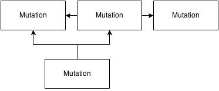
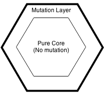
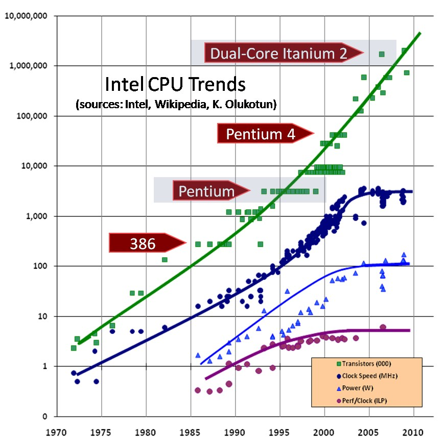
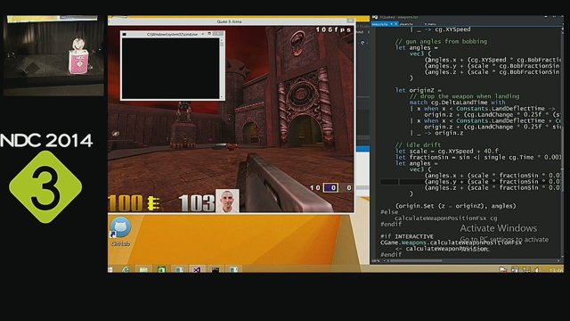

Introduction to Functional Programming
By comparing FP to OOP
Using F#/C#
By U6017748
Most F# code samples by Scott Wlaschin
Small Quizz
a = 1
a = 2
a ??
Introduction
A.A.A Team, 8th floor
Feel free to ask questions
My goal today
Quick intro on FP and OOP
F#/C# basics
F#/C# more advanced examples
F# Fun stuff unique to F#
Be aware
We will be using F#
All FP languages share the same core values
Like teaching OO C#,Java doesn't matter
Wide subject, bits and pieces
A little bit more about me
Used to work in Video Games
Programming in C
State Machines, Real Time
I like simple software that does complex things
I dislike complicated software that does simple things
What I miss the most
Code simplicity
Data + Code
Game software is really complex
But yet is so easy to reason about your code
What I do now
Entreprise programming
C++,C#,Java,OOP.
Lots of "complexity"
Design Patterns, IoC, SOLID,
Factories, Abstract Factories, Adapters
Decorators
Threads, locks, mocks...
It's the norm
But should it ?
what is oop?
Polymorphism
Inheritance
Encapsulation
what is oop?
“OOP to me means only messaging, local retention and protection and hiding of state-process , and extreme late-binding of all things I’m sorry that I long ago coined the term “objects” for this topic because it gets many people to focus on the lesser idea. The big idea is “messaging” … The key in making great and growable systems is much more to design how its modules communicate rather than what their internal properties and behaviors ” - Alan Kay
What is "real" OOP ?
SmallTalk
Erlang Actor Model
What happened ?
Industry got it wrong
Marketing
Silver bullet
That's what's happening with Agile today
Haskell's motto is "Avoid success at all costs!"
Ok How do we fix this ?
Design Patterns
SOLID
Program against an Interface
Composition over inheritance
What do we end up with ?
“OOP programs that exhibit low coupling, (high) cohesion and good reusability sometimes feel like nebulous constellations, with hundreds of tiny objects all interacting with each other. Sacrificing readability for changeability. Many of OOP best practices are in fact encouraged by functional programming languages.”
Mutability and OOP
“As someone who was initially hostile to the idea that state is the root of all problems, I initially greeted this idea with skepticism. Mutating state is so easy and fundamental in OOP that you often overlook how often it happens. If you’re invoking a method on an object that’s not a getter, you’re probably mutating state. ”
Mutability and OOP
“State is not your friend, state is your enemy. Changes to state make programs harder to reason about, harder to test and harder to debug. Stateful programs are harder to parallelize, and this is important in a world moving towards more units, more cores and more work. OOP languages encourage mutability, non determinism and complexity .”
Mutability and OOP
“Even if you don’t have concurrency, I think that large objected-oriented programs struggle with increasing complexity as you build this large object graph of mutable objects. You know, trying to understand and keep in your mind what will happen when you call a method and what will the side-effects be.”-Richard Hickey
So how does FP solves this
“OO makes code understandable by encapsulating moving parts. FP makes code understandable by minimizing moving parts.”- Michael Feathers
Encapsulating moving parts
Internal state is protected
Mutation is still there
Minimizing moving parts
Core doesn't contain mutating code
Outer layer handle mutations
What does it remind you of ?
Garbage Collection

Dandling pointers bugs
Double free bugs
Memory leaks bugs
Minimizing moving parts
Dead locks bugs
State mutation bugs
Spaghetti code
FP, the old new thing
1930s Lambda Calculus, "Programming" using Math
1950s Lisp, first FPL influenced by Lambda Calculus with assignment
1960s If You See What I Mean, Real implementation of Lambda Calculus (no assigment)
1970s Fortran, imperative with high order functions
1970s ML, hybrid, PURE FP with assignment, type inference, proof oriented, generics
1970-80, David Turner, Lazy Languages
1987, Haskell
So why the regain in interest
Moore's law
- "Power" (memory,clock speed...) double every 18 month
- #Transistors in CPU doubles every 2 years
- True until 2004 (We got easily life)
- Still true thanks to cores
F#
Strongly type Á multi-paradigm
Open Source
Runs on mono (First Class Support)
Since VS 2005 !
Louvre Abu Dhabi

Quake 3 And FP
Links
Vertical Slides
Slides can be nested inside of other slides, try pressing down.
Basement Level 1
Press down or up to navigate.
Basement Level 2
Cornify

Basement Level 3
That's it, time to go back up.
Slides
Not a coder? No problem. There's a fully-featured visual editor for authoring these, try it out at http://slid.es.
Point of View
Press ESC to enter the slide overview.
Hold down alt and click on any element to zoom in on it using zoom.js. Alt + click anywhere to zoom back out.
Works in Mobile Safari
Try it out! You can swipe through the slides and pinch your way to the overview.
Marvelous Unordered List
- No order here
- Or here
- Or here
- Or here
Fantastic Ordered List
- One is smaller than...
- Two is smaller than...
- Three!
Transition Styles
You can select from different transitions, like:
Cube -
Page -
Concave -
Zoom -
Linear -
Fade -
None -
Default
Themes
Reveal.js comes with a few themes built in:
Default -
Sky -
Beige -
Simple -
Serif -
Night
Moon -
Solarized
* Theme demos are loaded after the presentation which leads to flicker. In production you should load your theme in the <head> using a <link>.
Global State
Set data-state="something" on a slide and "something"
will be added as a class to the document element when the slide is open. This lets you
apply broader style changes, like switching the background.
Custom Events
Additionally custom events can be triggered on a per slide basis by binding to the data-state name.
Reveal.addEventListener( 'customevent', function() {
console.log( '"customevent" has fired' );
} );
Slide Backgrounds
Set data-background="#007777" on a slide to change the full page background to the given color. All CSS color formats are supported.
Image Backgrounds
<section data-background="image.png">Repeated Image Backgrounds
<section data-background="image.png" data-background-repeat="repeat" data-background-size="100px">Background Transitions
Pass reveal.js the backgroundTransition: 'slide' config argument to make backgrounds slide rather than fade.
Background Transition Override
You can override background transitions per slide by using data-background-transition="slide".
Clever Quotes
These guys come in two forms, inline:
“The nice thing about standards is that there are so many to choose from”
and block:
“For years there has been a theory that millions of monkeys typing at random on millions of typewriters would reproduce the entire works of Shakespeare. The Internet has proven this theory to be untrue.”
Pretty Code
function linkify( selector ) {
if( supports3DTransforms ) {
var nodes = document.querySelectorAll( selector );
for( var i = 0, len = nodes.length; i < len; i++ ) {
var node = nodes[i];
if( !node.className ) {
node.className += ' roll';
}
}
}
}
Courtesy of highlight.js.
Intergalactic Interconnections
You can link between slides internally, like this.
Fragmented Views
Hit the next arrow...
... to step through ...
any type- of view
- fragments
Fragment Styles
There's a few styles of fragments, like:
grow
shrink
roll-in
fade-out
highlight-red
highlight-green
highlight-blue
current-visible
highlight-current-blue
Spectacular image!

Export to PDF
Presentations can be exported to PDF, below is an example that's been uploaded to SlideShare.
Take a Moment
Press b or period on your keyboard to enter the 'paused' mode. This mode is helpful when you want to take distracting slides off the screen during a presentation.